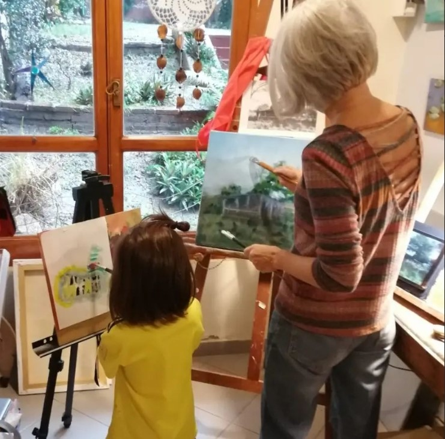
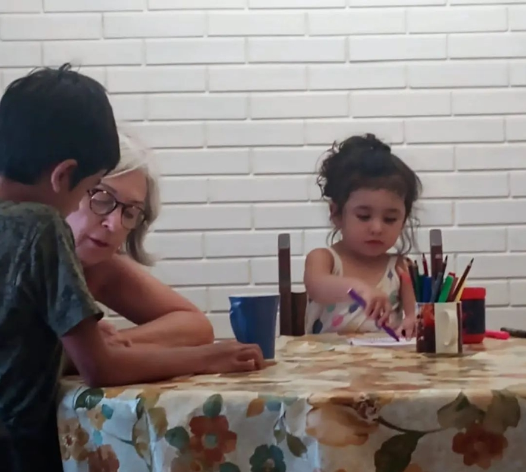
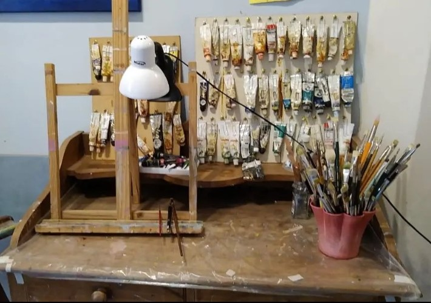
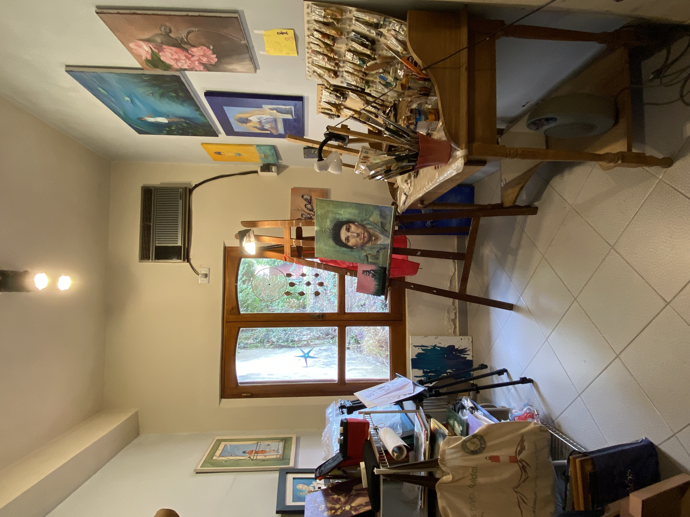
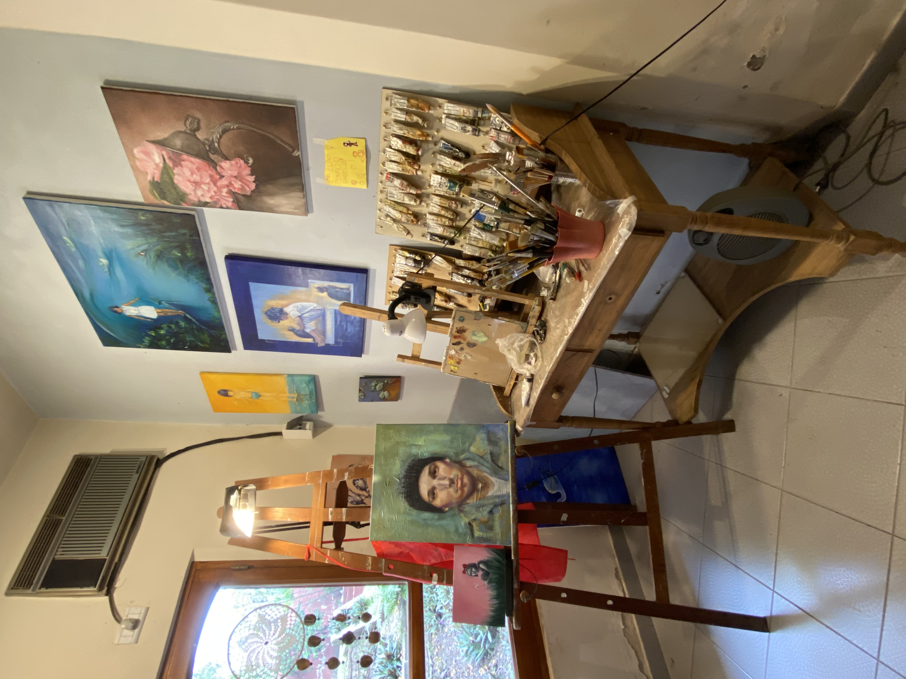
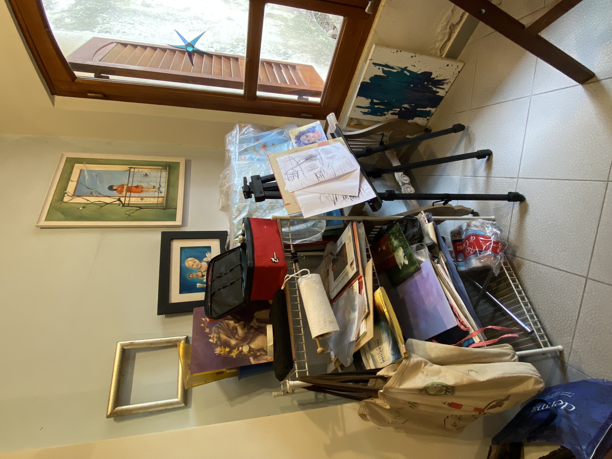

MI LUGAR DE TRABAJO
     MATERIALES
Este material es el que más utilizo para trabajar. Por su consistencia, la pintura al óleo permite crear una amplia paleta de color. Partiendo de la combinación de los colores base obtendrás un resultado gran calidad. El aceite que utiliza como aglutinante, permite que la pintura tarde mucho en secar. Por ello, el tiempo de realización de los cuadros puede durar mucho tiempo. Esto te permite rectificar todas las veces que quieras y es una de las mayores diferencias con la pintura acrílica. Otra de las grandes virtudes de la pintura al oleo es que su acabado es brillante. Estos colores tan vivos se conservan durante siglos, literalmente. Con unos controles mínimos de conservación, limpieza y restauración la pintura queda perfecta. Pase el tiempo que pase.

Se trata de una técnica pictórica reciente, por lo tanto se la asocia mucho con el arte contemporáneo. Emplea los mismos pigmentos usados en óleo o acuarela, con la diferencia de que están contenidos en una emulsión de un polímero acrílico conformado por una resina sintética. La pintura acrílica es soluble en agua. A pesar de eso, una vez secas son resistentes a la misma. Son de secado rápido, pero al hacerlo el tono de color sufre de una ligera modificación, mucho más que el óleo. Una de las tantas ventajas es que se puede usar en diferentes tipos de superficie, ya sea en cartón, madera, lienzo y tela, dado que se adhiere fácilmente a cualquier superficie sin que ésta se raspe o se deteriore con el tiempo.

La acuarela, técnica de pintura transparente, utiliza pigmentos finos o tintas, mezcladas con goma arábiga para darle cuerpo y glicerina o miel para darle viscosidad y unir el colorante a la superficie de pintar. Las características de la acuarela son 4 principalmente: es una pintura al agua, es muy translúcida, los colores cambian al secar y tiene carácter impredecible. Los colores permanecen cuanta más calidad tienen los pigmentos. La técnica de la acuarela se basa en la superposición de capas transparentes (lavados), utilizando la blancura del papel para obtener efectos y toques de luz. A medida que se superponen más lavados el color se hace más profundo. El color de la acuarela se puede modificar añadiendo o quitando agua, usando pinceles, esponjas o trapos.

Las barras de carboncillos o carbonilla son uno de los materiales más elementales para dibujar. Se trata de un utensilio de dibujo desde la prehistoria. En esta época pintaban en las paredes de las cuevas con trozos de palos quemados, que fue redescubierto en el Renacimiento. El carboncillo, al ser un material natural, deja trazos más difusos e irregulares. Además, su textura pulverulenta permite difuminarlo con mayor facilidad que los trazos de lápices de grafito. Existen varios tipos de carboncillo, los más utilizados son los carboncillos comprimidos y los lápices de carboncillo.

El pastel es una técnica pictórica del grupo de las llamadas técnicas secas, que no utiliza ningún disolvente y se aplica directamente sobre la superficie de trabajo, a diferencia de la pintura al óleo o la acuarela. Se puede aplicar con tiza seca y como soporte papel de buena calidad y gramaje, color neutro no blanco y de ligera rugosidad, aunque la técnica es lo suficientemente versátil como para que se pueda usar sobre otras superficies (cartón, madera, tela, etc). Es fácil de trabajar con ella tanto por su opacidad, como a la hora de aplicarlo sobre una superficie. El pastel es una técnica que combina el dibujo con la pintura, pues se dibuja exactamente de la misma forma con la que después se pintan los espacios. Este material sirve muy bien para realizar trabajos de degradados de color.
TECNICAS
-
Puras
Se dice que la técnica es pura cuando se utiliza solo un tipo de material para la obra, ya sea óleo, acuarelas, carbonilla, pastel, etc, sin mezclarlos.
Lo que diferencia a un tipo de pintura de otro es la manera en la que se disuelve y fija el pigmento de color. Dependiendo del material disolvente y aglutinante, tenemos distintos tipos de pintura que tienen cualidades diversas.
-
Mixtas
La técnica mixta consiste en combinar distintas técnicas o materiales de pintura (acuarela, lápiz de color, acrílico, tinta, témpera, etc…) empleándolos en los distintos pasos de una obra, para conseguir acabados finales más variados y concretos.
En este sentido, la combinación de materiales y técnicas es la clave. La meta es que cada aporte añada interés, variedad y profundidad a la obra, creando un todo que funcione.